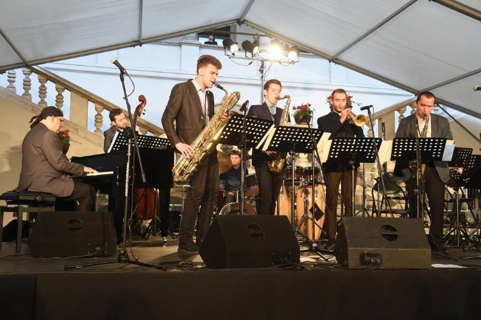
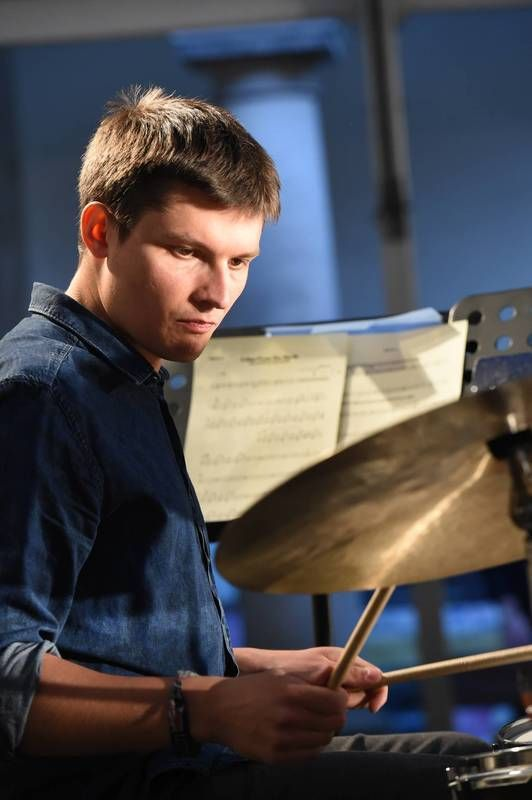
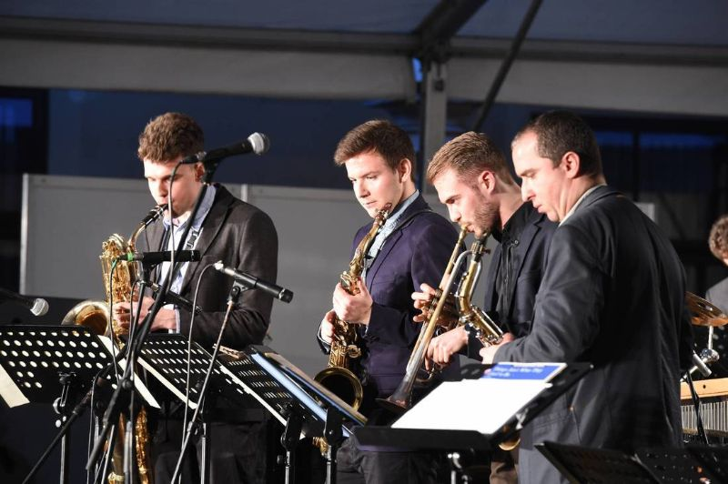
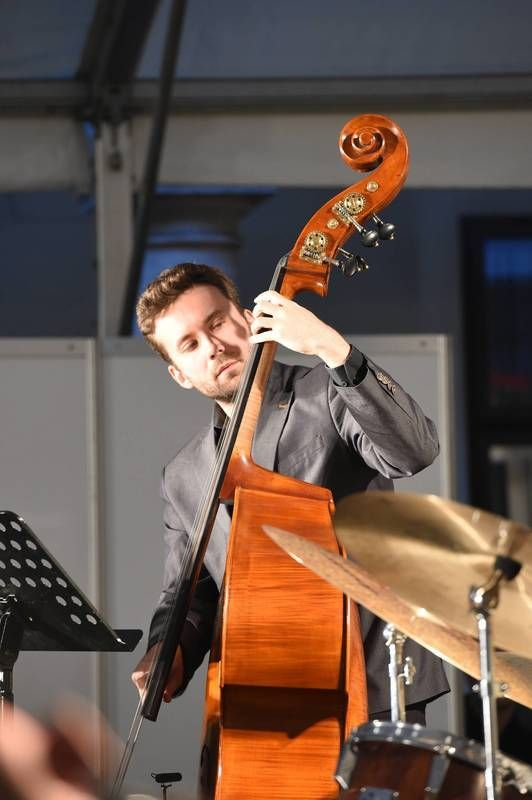
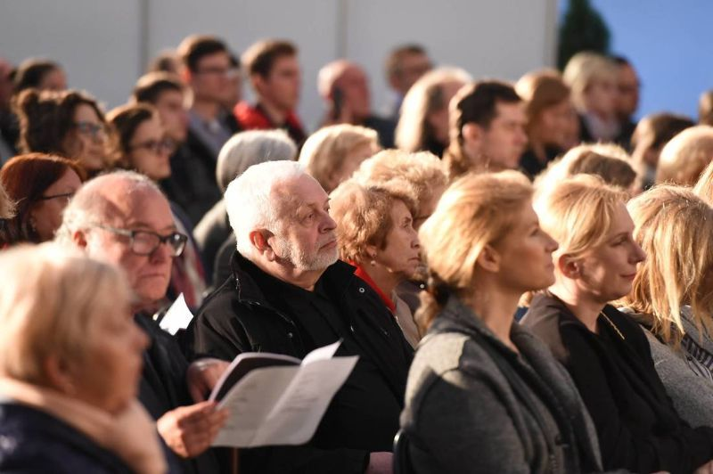

Orchestra Dedicated. First time for open public. Photo by great Jan Zych
Marcin Konieczkowicz (standing) and Col. Wojtek Groborz (seated). Maybe some generations apart, but the same st-age Photo by great Jan Zych.
Mateusz Wachtarczyk (Pan Rychtarski), young talent from Silesian Wodzislaw soloing, Marcin Ślusarczyk attentively listening, observing and supervising. Photo by great Jan Zych
Now Marcin's turn! Photo by great Jan Zych
Drums and cymbals. Full control of rhythm and color of the sound by Patryk Dobosz (perfect name for drummer in Hungary). Photo by great Jan Zych.
Our horn section; from left: Marcin Konieczkowicz, Bartłomiej Noszka, Mateusz Wachtarczyk and Marcin Ślusarczyk. Photo by great Jan Zych
Our base. On the bass Wojtek Szwugier, our harmonic and rhythmic fundation. Photo by great Jan Zych.
Nice suprise. Our performance was attended by my trombone Professor, Andrzej Czechowski (in the center). I think, I finished our Academy thanks to his patience, mercy and respect to my father (really great trombone player - Musician's Musican. Photo by great Jan Zych. https://pl.wikipedia.org/wiki/Jan_Zych_(fotograf)